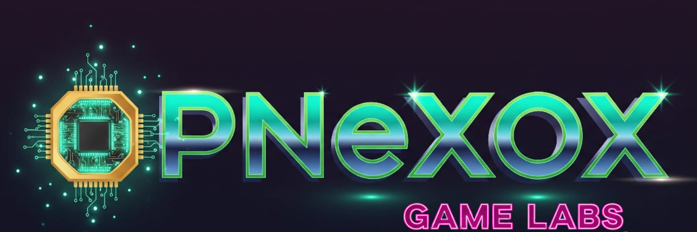

🔒 Documento Confidencial - OpenNexus 2025
Generado el: 2025-08-01 11:47:19
Contraseña del archivo: ONX814634Tech
💡 Para convertir a PDF: Usa Ctrl+P → Guardar como PDF en tu navegador

🮠OpenNexus Games Lab - Caminos de la Fe
Cruzada y Conquista - El RPG que Revoluciona la Monetización
Proyecto: Caminos de la Fe - RPG Medieval
División: OpenNexus Games Lab
Estado: En Desarrollo (Q1 2026 Launch)
Plataforma: Unity 3D / C# (Migración desde Python/Ursina)
🰠Un RPG Medieval Revolucionario
Sumérgete en las Cruzadas como nunca antes. Un RPG de acción en tiempo real que combina historia, fantasÃa y una economÃa justa para todos los jugadores.
⚔️ CaracterÃsticas Principales
- ⚔️ Combate en Tiempo Real: Acción 3D fluida con combate estratégico y habilidades únicas por facción
- 🯠Sistema de Facciones: Elige entre Cruzados, Sarracenos o Antiguos, cada uno con ventajas únicas
- 📈 Progresión Inteligente: Sistema de stats con costo cuadrático que recompensa la dedicación
- 🆠Armas Legendarias: Ãtems únicos por servidor con efectos visuales espectaculares
- ⚡ PvP AsÃncrono: Combates justos con simulación de servidor y matchmaking por nivel
- 🌠Guerras de Facciones: Participa en conflictos globales que afectan a todos los jugadores
⚔️ Sistema de Facciones
🛡️ Cruzados
- Ventaja: +30% daño vs Antiguos, -10% vs Sarracenos
- Descripción: Los guerreros de la fe, expertos en combate defensivo y formaciones tácticas
🹠Sarracenos
- Ventaja: +20% daño vs Cruzados, neutro vs Antiguos
- Descripción: Maestros de la velocidad y la precisión, dominan el combate a distancia
🔮 Antiguos
- Ventaja: +10% daño vs Sarracenos, -20% vs Cruzados
- Descripción: Poseedores de conocimientos arcanos y tecnologÃas perdidas
💰 Monetización Ética y Sostenible
Nuestro modelo respeta el tiempo de los jugadores y crea una economÃa justa para todos.
Modelo de Ingresos
| Tier | Descripción | Precio | Detalles |
|------|-------------|---------|----------|
| 🮠Juego Gratuito | Acceso completo sin restricciones | GRATIS | Contenido completo disponible |
| 💠Oro Premium | Moneda del juego | $1+ USD | $1 = 1000 oro (Nivel 1-10), escala +100 oro/nivel |
| ✨ Faith Pass | Suscripción premium | $10/mes | Sin anuncios, misiones adicionales, gear exclusivo |
| 🔥 NFTs Únicos | Activos blockchain | Variable | Experiencias del mundo real, Polygon blockchain |
🌟 CaracterÃsticas Anti-Pay-to-Win
- ✅ Costo cuadrático de mejoras: (nivel+1)²
- ✅ LÃmites diarios de farming para equilibrio
- ✅ Matchmaking por nivel en PvP
- ✅ Moneda de evento para jugadores F2P
- ✅ EconomÃa con mecanismos anti-inflación
🚀 Integración con Ecosistema OpenNexus
Caminos de la Fe es el motor de adquisición masiva para todo el ecosistema OpenNexus:
🔒 CounterCore HazardAV
- Integración: Anuncios integrados del antivirus con IA
- Beneficio: Recompensas en el juego por probar la seguridad
💳 CajaCentral POS
- Integración: Sistema de punto de venta para PYMES
- Beneficio: Marketing cruzado con descuentos especiales
⚡ NexusOptim IA
- Integración: Optimización de redes con IA
- Beneficio: El juego demuestra nuestras capacidades tecnológicas
🏛️ Turismo Nacional
- Integración: NFTs canjeables por experiencias reales en Costa Rica
- Beneficio: Alianzas con ICT (Instituto Costarricense de Turismo)
🗺️ Roadmap de Desarrollo
| Fase | PerÃodo | Objetivos |
|------|---------|-----------|
| Q1 2026 | Alpha Launch | Sistema de facciones, combate básico, economÃa de oro, Faith Pass MVP |
| Q2 2026 | Beta Cerrada | PvP asÃncrono, guerras de facciones, sistema de misiones completo |
| Q3 2026 | Global Launch | NFTs en Polygon, integración con ecosistema OpenNexus |
📊 Impacto Estratégico
💰 Proyección Financiera
- Año 1: $170,000+ en ingresos
- 100K jugadores generan 5K+ leads para otros productos OpenNexus
🯠Adquisición de Usuarios
- Canal de costo casi cero para adquirir usuarios de CounterCore HazardAV y CajaCentral POS
🏗️ Vitrina Tecnológica
- Demuestra las capacidades de Edge AI y optimización de nuestros chips OpenChip CR
🇨🇷 Impacto Nacional
- Promociona el turismo costarricense y posiciona a OpenNexus como marca de innovación
🔧 Especificaciones Técnicas
Plataforma de Desarrollo
- Engine: Unity 3D 2023.x
- Lenguaje: C# (migración desde Python/Ursina)
- Backend: FastAPI + Python
- Base de Datos: PostgreSQL + Redis
- Blockchain: Polygon para NFTs
- Monetización: In-app purchases, suscripciones
Arquitectura
- Cliente: Unity multiplataforma (PC, Mobile)
- Servidor: Cloud-native con auto-escalado
- PvP: Sistema asÃncrono con simulación
- Anti-cheat: Validación server-side
📠Información de Contacto
Jorge Eduardo Bravo Chaves
Director - OpenNexus Games Lab
🚀 Próximos Pasos
- 📧 Contactar Equipo: Coordinar reunión de presentación
- 💼 Inversión & Alianzas: Discutir oportunidades de partnership
- 🮠Demo Técnico: Mostrar progreso actual del juego
© 2025 OpenNexus Hardware & Software - Games Lab Division
Transformando la Crisis Tecnológica en SoberanÃa Nacional